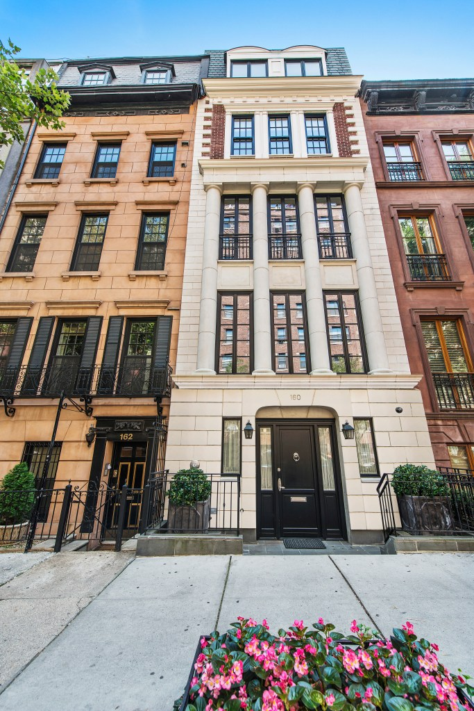

The One “Missing Middle” Reform That No One Wants to Talk About
October 20, 2024 Updated: November 8, 2024
This member commentary post does not necessarily reflect the views of Asheville For All or its members.
“Missing Middle”—In Case You Missed It
Asheville city leaders, just like in many other cities, have acknowledged that we have a suite of barriers that prevent our neighborhoods from looking like the neighborhoods that we most admire in cities: neighborhoods that are walkable and of moderate density, perhaps mixing single-family-homes with rowhouses, triplexes and larger apartment buildings that might even include ones with fifteen or twenty homes. These “missing middle” neighborhoods are so-called because they don’t look like downtowns, but they don’t look like suburbs either; and they’re missing because planners, elected officials, and the citizens that vote them in have favored car dependent sprawl and atomization over walkability and heterogeneity since the middle of last century.
That suite of barriers—and possible fixes to it—was written up in Asheville’s “Missing Middle Housing Study,” which was released last December. You can read all about the study and the surrounding conversation at Asheville For All’s “missing middle” info page.
The city has since started sketching out and lining up its proposed changes, informed by the study, but these changes have been delayed in getting in front of city council.
Let’s Ban Large Single Family Homes
So as we are waiting (and waiting and waiting and waiting) for meaningful “missing middle” zoning and permitting reform, I thought it might be fun to discuss the one suggested reform included in the report that I think is least likely for Asheville to adopt: banning large single family homes.
Hey, I was surprised to see this in the study too.
Most of the missing middle study reads like an exercise in extreme moderation. This is a document designed to promote greater housing density that suggests three story buildings might be too tall! Its authors are cautious to a fault.
And yet, there it is, on page 144:
Limit Square Footage of Single Family Houses. To further incentivize MMH types and promote more attainable small-unit housing types, provide a building footprint and/or gross square footage limit for single-family houses. Jurisdictions that have successfully used this tool calibrate the limit for a single-family house somewhere between a 1,200 sq. ft. and 1,600 sq. ft. maximum.
My first reaction to this—and it’s still my reaction—was that this is a cool idea. But to my friends, even my pro-housing friends, it seems pretty extreme! People didn’t really want to talk about it.
So let’s talk about it why I think it’s a good, necessary, and fitting idea.
Missing Middle Reform Needs to Be About More Than Just Legalizing Housing Types
Basic land use theory tells us that when neighborhoods are in demand, and in turn land value is relatively high, home construction is going to tend towards taller buildings and a greater maximization of land use. And it seems that this would tend towards multifamily homes. Certainly, in older cities before restrictive zoning was implemented, this was the case. Cities naturally developed more apartments and taller buildings in core neighborhoods—ones closest to jobs, amenities, and services.
But in the 21st century, transforming established neighborhoods is hard, even after zoning codes have been reformed. Norms, habits, and infrastructure devoted to automobiles is a big reason. So are modern building codes. Rules around building safety aren’t necessarily bad, but it is a simple fact that much of the old multifamily construction that you might find in Hyde Park, Chicago or Brooklyn, New York just couldn’t be built today for anything close to their historical costs.
All of this means that if we really want a variety of housing types and options in our core neighborhoods, we need not only to legalize homes, we need to incentivize them too.1
Taking large, single-family homes off of the table for those neighborhoods that can best support “middle housing” is just one simple way to stack the deck and change the decision-making math for builders. Where land values are high, it doesn’t make any sense for a developer to build a really small bungalow, for example. And so the best possible option might be more likely to be an apartment or condo building where more than one family can live.

Banning Big Single Family Homes is an Anti-Displacement Measure
When we think of “anti-displacement measures,” we probably think about direct tenant protections or subsidies.
But Asheville’s own commissioned anti-displacement study from last year—it was published as a section within the Missing Middle Housing Study—is clear: “[missing middle housing] has an important role to play in a multifaceted approach to reducing displacement pressure” (126). The anti-displacement study even lists “minimum density” requirements as a possible strategy that the city could implement to prevent the construction of new single-family homes in missing-middle-ready residential neighborhoods.
When a place becomes popular, as Asheville has, land values rise. And when land values rise, teardowns are going to happen. While all buildings have an end-of-life, we can mitigate such instances in areas with highly vulnerable populations with broad upzoning. (I’ve pointed this out here, and the anti-displacement study points to the same conclusion on page 99.)
The last thing we want is for “naturally occurring affordable housing”2 to be torn down and replaced, not with apartments, but with McMansion-sized homes. It’s my understanding that “demolition controls”—these are policies that make it harder for a developer to demolish existing apartments, especially those serving more vulnerable populations—are hard to enact in North Carolina. But banning large single family homes in middle-housing-ready neighborhoods would at least greatly diminish the chance that someone might tear down a duplex or triplex in order to replace it with a single-family, owner-occupied home.
Neighborhoods experience change, this can’t be stopped. The ultimate goal here, affirmed by the city’s anti-displacement study, is to ensure that any neighborhood, and especially the ones with more vulnerable tenant populations, can experience a net increase in the number of homes. More homes mean less chance for speculation, but also more options for anyone who is pushed, cajoled, pulled, or urged to move, and less opportunity for landlords to pit renters against each other.
Critics Say Banning Housing Types is Anti-Property Rights. But . . .
If there’s one likely criticism of a policy that would ban new construction of large single-family homes in middle-housing-ready neighborhoods that might be voiced by pro-housing and NIMBY types alike, it would be the argument that this is an overbearing violation of individual property rights. Indeed, a lot of pro-housing arguments are made using a defense of property rights. (Here’s just one as an example.)
If someone owns a plot of land and wants to put apartments on it, why shouldn’t they be able to do it?
The pro-housing movement is a big tent, and it welcomes as many libertarians as it does socialists, but I’ve never been entirely satisfied with this line of argument.
If we want to get philosophical, property rights aren’t plucked from nature as John Locke might have it; they are defined and enforced by government. To borrow from Locke, we might say that they are written into the “social contract.” As such, there are all sorts of stipulations and limitations that we expect. If you started a bonfire in your front yard and began burning plastic junk, your neighbors might get mad at you. So might your government.
That’s not a terribly relevant example—of course, you might say, we ban such uses of your property that might have direct harm on others.
So maybe here’s a better, more relevant example. In downtown Asheville, you cannot build any one story buildings. A relatively recent video on YouTube took issue with this fact, noting for example that it meant that Green Sage and other popular destinations were non-comforming buildings.
But these kinds of rules are good! And they’re in place for a reason. Downtown Asheville is planned to be just that—a downtown. A “central business district.” That means that the city has made certain planning decisions and investments regarding the area—putting in trash cans on the sidewalk, for example, or building and funding the maintenance of a transit hub.
Green Sage doesn’t have to pack up and go because of the two-story minimum. But were the building that it’s in to reach its end-of-life, it would make sense that we would want the next building there to contribute as much as possible of what makes downtown downtown. (Just imagine if someone wanted to replace it with a surface parking lot!)
Some time ago on the internet, I saw a phrase used to describe those that want only single family homes in their neighborhoods that are near attractive walkable commercial corridors or urban centers: density free riders.
A free rider is someone who benefits from something without helping to pay for it. For example, in some states such as North Carolina, legislatures have encouraged what labor unions see as a “free rider problem”: a worker may legally benefit from having a union in a workplace while still not contributing any union dues.
And so the idea behind a “density free rider” is that when you live in a walkable place, for example, a neighborhood just North of downtown Asheville, or along Haywood St. in West Asheville, you benefit from the popularity of that place, and the fact that it has a nearby population to support parks, restaurants, stores, libraries, and other amenities. But if you have a small family on a large lot—presumably, at least some of the households in these kinds of Asheville neighborhoods are empty nesters, for example—you aren’t contributing as much to the base of economic support that allows such places to exist as are smaller lots with more people living on them. And your land use runs counter to what is needed for walkability and heterogenous, amenity-rich neighborhoods.
Presumably this slur, “density free rider,” is best lobbed at those who would insist on single family home dominance rather than all who dwell in such homes; after all, we are all free riders in one domain or another—it’s probably the only way that the “social contract” works—and the language of free ridership can become toxic just as it can be useful.
My point isn’t to blame anyone for living in a single family home on say, Vermont Ave., or near Chestnut Hill/Charlotte St. Rather, my point is to show how the language of “property rights”—language that is elevated in part by classical economists who simultaneously decry free ridership—fails at least on its own economistic terms.3
What If a Big Family Wants to Live in a Core, Walkable Neighborhood?
If we enact a ban on new, large, single family homes in middle-housing-ready neighborhoods, are we excluding some families from these places?
No! Here’s a few points to close things out:
First, there are plenty of single family homes in these neighborhoods already, and as we labor to emphasize when we argue for moderate “missing middle” zoning reforms, our neighborhoods are not going to change overnight.
Second, the single family homes in these neighborhoods are already excluding people because of their price tag. A LOT of people. That’s because these places don’t have enough housing to meet demand. And as the Missing Middle Study points out, adding more single family homes just cannot fix this (138).
And let’s say Asheville sets the maximum square-footage for these kinds of homes to 1,600. It’s quite possible to have a roomy four-bedroom house under such a limit. (You might have to sacrifice a fancy entryway, a fourth bathroom, or one of those second floor loft common areas.)
But if you still need a bigger home, and want it in a walkable residential neighborhood, maybe we can have some new multifamily options for you. Consider for example, that the new Tudor-style townhomes on Broadway in North Asheville max out at more than 3,000 square feet. Or that even on a standard 50ft. lot, a stacked triplex could presumably hold three homes of two thousand square feet each.
(I’ll say here again that I think allowing three story building heights anywhere in Asheville that is middle-housing-ready is important, even if this is contrary to the overly cautious Missing Middle Housing Study.)4

These wouldn’t be small homes. But they would still represent significant gains in terms of land use efficiency as compared to the large single-family homes that would no longer be allowed to be constructed in the same place.
Postscript
I wrote the above before Hurricane Helene. I know we’re all preoccupied with things other than Asheville’s Missing Middle Housing Study right now. And watching from afar—my family is evacuated—I’ve been super impressed by the mayor and council, by city staff, and by all sorts of Ashevillean organizations and individuals in their efforts around disaster relief. If the last thing on anyone’s mind is pro-housing zoning and permitting reform, that’s understandable.
But I don’t think the storm is going to change the fact that Asheville really needs more housing, and especially more multifamily housing near jobs, amenities, and public transit.
Asheville’s Missing Middle Housing Study and its accompaniment, the anti-displacement study, cost the city more than $100,000. Along with this year’s “affordable housing study,” they all point to the importance of pro-housing reforms and incentives, and they all specifically highlight the role of middle housing types to provide more options, more affordability, and less displacement pressures. The city needs to take these studies’ recommendations seriously, and the sooner it happens, the better.
Another Perspective
After writing the above, my co-lead organizer Scott asked if he could share his thoughts on the matter. Scott is much wiser than I am, most of the time, so here is his perspective!
Home size should be based on individual choice, notably of a property owner, and should otherwise be based on performance standards of a given site (i.e. does the proposed home meet existing bulk and dimensional standards for lot size, setbacks, building height max., etc.). Placing a square footage cap on homes may lead to weird, unintended outcomes, like more expensive homes and demographic homogeneity and rigidity.
Expensive Homes Scenario: If a property’s land value is $100,000, and the size of a home is capped at 1,600 SF, then that smaller home may end up getting upfitted with higher-dollar fixtures and finishes. This local 600 SF home is a magnified example of this, but the fundamental dynamics of underlying land cost to building/home cost are always present.
Demographic Homogeneity and Rigidity Scenario: Over time, as homes are added onto or demolished/rebuilt, if there’s a 1,600 SF home size cap in place, that means anyone with a larger household size (big family, or group of roomates, etc.) will have to look elsewhere for larger size/more bedroom housing.
-Scott
-
As an aside, I’ll note that the Missing Middle report cites a number of different possible incentives, such as “waiving sewer hookup fees” for middle housing types (148). These kinds of incentives, reducing so-called “soft costs,” are just as important as passing comprehensive zoning code reform too. ↩
-
Naturally Occurring Affordable Housing, or NOAH, is just a fancy phrase used to describe older buildings where housing costs are lower, or maybe even newer homes outside of in-demand hot spots. Inevitably, there’s some debate around whether this a useful phrase or not. (Detractors, for example, argue that housing affordability is the outcome of land use rules and so there’s nothing natural about it.) ↩
-
My Georgist friends would reconcile the contradiction here with a shrewd response: “Land value tax would fix this!” ↩
-
Allowing three stories, it seems to me, will open up small lots to more multifamily housing. Examining the “lot tests” in the Missing Middle Housing Study (64), it occurs to me that the diagrams shown don’t account for how Asheville’s topography may make these very efficiently mapped out schemes less viable in the real world, and allowing three stories may provide some added flexibility to account for this. And personally, I live in a skinny house that is three stories tall but less than 800 square feet. Additionally, a recent study shows that shifting height limits from two to three stories lowers the average cost of construction per square foot. ↩
This member commentary post does not necessarily reflect the views of Asheville For All or its members.